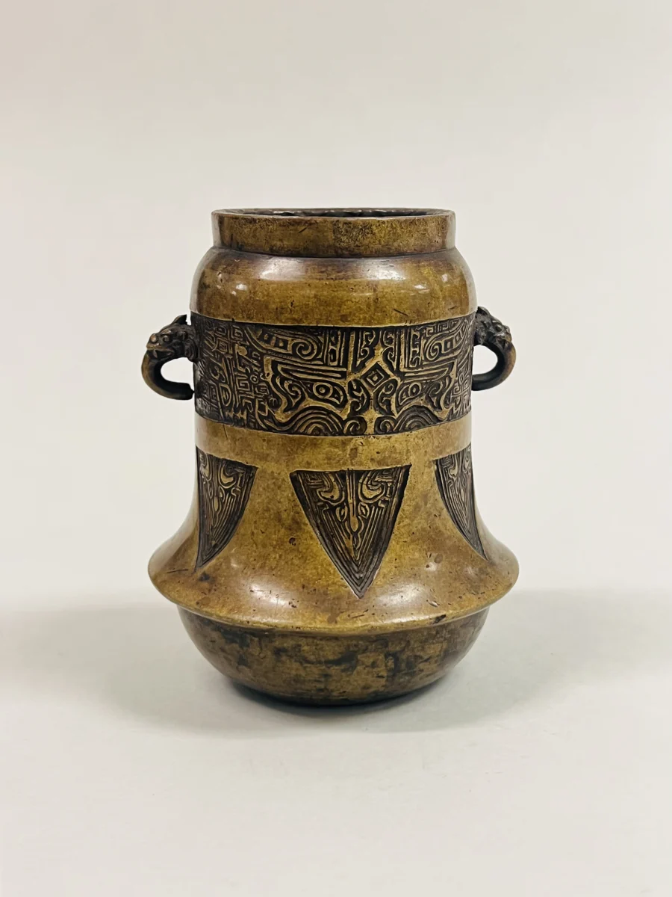

Objekto byla / 001
Bronzos tyla
Japonija · XVIII–XIX a.
DEMO ĮVERTIS
1 200–1 800 €
DEMO LIKO
Išbandyti statymą ↘Muziejaus objektas neparduodamas.
01 / Kilmė
Istorija yra
daikto dalis.
Japonija, XVIII a. vidurys–XIX a. pabaiga. Bronza. Aukštis 12,1 cm. Muziejaus inventoriaus numeris 14.58.169. 1914 m. palikimas.
Mokomojo aukciono loto numeris nėra muziejaus inventoriaus numeris. Kūrėjas nenurodytas.
Būklės studija
Matomas istorinis paviršius ir spalvos netolygumai. Tai vaizdo stebėjimas, ne profesionali būklės ataskaita. Prieš tikrą sandorį būtinas objekto tyrimas.
02 / Vietinė demonstracija
Jūsų kitas
žingsnis.
Statymas nekeičia jokių tikrų duomenų.
Laikmatį galima pristabdyti, pratęsti arba atkurti.
- Dabartinis demo statymas
- 1 200 €
- Minimalus žingsnis
- 100 €
Studijos pastabos
Ką reiškia demonstraciniai įverčiai?
Tai išgalvoti mokomieji skaičiai. Jie neatspindi muziejaus objektų vertės, prieinamumo ar pardavimo.
Vaizdų kilmė ir tikros rezervacijos
Istoriniai objektai iš atviros muziejaus kolekcijos. Ši svetainė nėra muziejaus ar tikrų aukcionų paslauga. Duomenys niekam nesiunčiami.